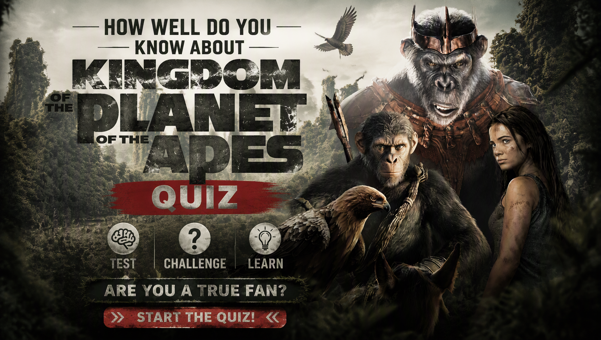

POST-APOCALYPTIC • MOVIE TRIVIA
Kingdom of the Planet of the Apes Quiz
Think you know Kingdom of the Planet of the Apes? Test your knowledge of Noa, Mae, Raka, Proximus Caesar, Sylva, Trevathan, the Eagle Clan and the new ape kingdom.
One answer is correct for each question. Choose carefully and see how well you remember the characters, events, Caesar's teachings and the new world of the apes.
This quiz contains major story details from Kingdom of the Planet of the Apes.


ABOUT THE QUIZ
The Kingdom of the Planet of the Apes Quiz is a 30-question trivia challenge for fans of the post-apocalyptic science-fiction movie. Set generations after Caesar's reign, the story follows Noa as he journeys through a world where different ape clans have developed their own beliefs and societies.
The questions cover Noa, Mae, Raka, Proximus Caesar, Sylva, Trevathan, Soona, Anaya, Koro, the Eagle Clan and the changing legacy of Caesar.
Some questions test major story events, while others focus on character identities, relationships, Caesar's teachings, the vault, Mae's mission and the events leading to the movie's ending.
Kingdom of the Planet of the Apes Movie Details
Title: Kingdom of the Planet of the Apes
Format: Post-apocalyptic science-fiction action film
Setting: A future Earth generations after the time of Caesar
Main Characters: Noa, Mae, Raka, Proximus Caesar, Sylva, Trevathan, Soona and Anaya.
The story follows Noa, a young chimpanzee from the Eagle Clan, after his village is attacked. His journey brings him into contact with Raka, Mae and the followers of Proximus Caesar.
WHAT THIS QUIZ COVERS
The questions cover important characters, clans, locations, relationships and events from Kingdom of the Planet of the Apes.
Noa and the Eagle Clan
Questions cover Noa's species, his family, his friends, the Eagle Clan's traditions and the events that force him to leave his home.
Raka and Caesar's Teachings
The quiz covers Raka, his orangutan heritage and the principles he teaches Noa about Caesar and how apes should treat one another.
Mae and the Vault
Questions cover Mae's identity, her mission, the vault, the book she claims to seek and the technology she ultimately delivers to the humans.
Proximus Caesar and Sylva
The quiz covers Proximus Caesar's new ape kingdom, Sylva's role as his military commander and Trevathan's position as a human advisor.
The Ending
Several questions focus on the final events, Mae's mission, the satellite decryption key and the connection between the ending and the wider Planet of the Apes world.
HOW THE QUIZ WORKS
The quiz contains 30 questions. Every question has four possible choices, but only one answer is correct. Read each question carefully and select the answer you believe is correct before continuing.
Each correct answer gives you 1 point, while an incorrect answer gives you 0 points. With 30 questions in total, your number of correct answers is converted into a final percentage out of 100%.
Your final result represents your knowledge of Kingdom of the Planet of the Apes based on your performance. A high score means you successfully remembered many of the characters, events and details featured in the movie.
Quiz Navigation
Starting the quiz
Select START QUIZ on the opening screen to begin. The first question will appear with four possible answers.
Selecting an answer
Read the question and all four choices before making your decision. Select the answer you believe is correct and continue through the quiz.
Next and Back buttons
Use Next to move forward through the questions. The Back button allows you to return to an earlier question and review your selection. Your current question number and progress are displayed as you move through the quiz.
Finishing the quiz
Continue until you have answered all 30 questions. When you reach the end, submit your answers to finish the quiz and view your final percentage and Planet of the Apes Knowledge result.
Try Again and Challenge Friends
After viewing your result, select TRY AGAIN to replay the quiz and attempt a higher score. You can also use SHARE MY RESULT or CHALLENGE YOUR FRIENDS to share your result and challenge other fans.
FAQ
How many questions are in the quiz?
There are 30 questions in total, and every question has four possible choices.
What is the maximum score?
The maximum result is 100%. Each correct answer contributes 1 point before the score is converted into a percentage.
What topics are covered?
The quiz focuses on Kingdom of the Planet of the Apes, including Noa, Mae, Raka, Proximus Caesar, Sylva, Trevathan, the Eagle Clan and Caesar's teachings.
Who is Noa?
Noa is a young chimpanzee from the Eagle Clan and the central protagonist of Kingdom of the Planet of the Apes.
Who is Raka?
Raka is an orangutan who follows the teachings of Caesar and helps Noa understand Caesar's legacy.
Who is Mae?
Mae is a human scavenger who becomes involved with Noa and Raka while pursuing her own mission connected to the human world and the vault.
Who is Proximus Caesar?
Proximus Caesar is a chimpanzee who has created his own powerful ape kingdom while using Caesar's name and teachings to support his rule.
Can I take the quiz again?
Yes. Select TRY AGAIN after completing the quiz to start another attempt and try to improve your score.
Can I challenge my friends?
Yes. Select CHALLENGE YOUR FRIENDS after completing the quiz to share the challenge and see whether your friends can beat your score.
Spoiler Warning
This quiz contains spoilers for Kingdom of the Planet of the Apes. Questions may reveal character identities, relationships, major events, Caesar's teachings, Mae's mission, the vault and important details from the movie's ending.
If you have not watched Kingdom of the Planet of the Apes, consider watching the movie before taking the quiz to avoid having important story details spoiled.